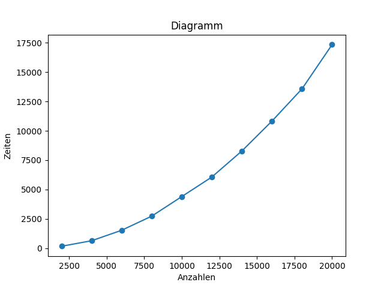

Die Analyse der Laufzeit von Algorithmen ist ein wichtiger Bestandteil der Informatik. Sie hilft dabei, die Effizienz von Algorithmen zu verstehen und zu vergleichen – unabhängig davon, wie schnell der konkrete Rechner ist. Das wichtigste Werkzeug dafür ist die O-Notation (engl. Big-O-Notation).
Diese Seite ist ein Lernpfad in vier kurzen Schritten. Jeder Schritt hat dieselbe Form: Erst liest du kurz, worum es geht, dann zeigt dir ein Video (1–2 min, ohne Ton) die Idee oder den Code in Thonny, dann prüfst du mit einer kleinen Frage, ob du es verstanden hast. Halte die Videos ruhig an und rechne oder tippe mit.
Zum Schluss findest du den Praxisbezug, eine Zusammenfassung und die Übungsaufgaben.
Sekunden hängen vom Rechner ab, die Anzahl der Schritte nur vom Algorithmus und von der Eingabegröße n. Im Video zählst du in Thonny die Schritte der Funktion summe für die Liste [4, 8, 1] mit. Achte darauf, welche Anweisungen einmal zählen und welche so oft, wie die Schleife läuft.
Zum Nachlesen steht die Zählung mit dem Nachweis über die Definition in Beispiel 1:
Was gibt summe([3, 1, 4, 1, 5, 9]) zurück, und wie viele Schritte braucht die Funktion dafür?
Rückgabe 23. Die Liste hat n = 6 Zahlen, also 1 + 6 + 1 = 8 Schritte.
Steckt eine Schleife in einer anderen, zählt man, wie oft die innere Schleife insgesamt läuft. Im Video läuft Bubblesort ohne Abbruch mit der Liste [5, 2, 9, 1], und eine Zähler-Tabelle hält fest, wie oft verglichen wird. Achte darauf, dass die innere Schleife mit jedem Durchlauf von i kürzer wird – deshalb bilden die Vergleiche ein Dreieck.
Um die O-Notation besser zu verstehen, betrachten wir den Bubblesort-Algorithmus. Er vergleicht Elemente einer Liste wiederholt und vertauscht sie, bis die Liste sortiert ist.
Prozedur BubbleSort(arr):
n = Länge(arr)
für i von 0 bis n − 2:
für j von 0 bis n − i − 2:
wenn arr[j] > arr[j + 1] dann:
tausche arr[j] und arr[j + 1]Die Grenzen sind einschließlich gemeint. Die innere Schleife endet bei j = n − i − 2, damit arr[j + 1] höchstens auf das letzte Element arr[n − 1] zugreift. Die Anzahl der Vergleiche ist (n − 1) + (n − 2) + … + 1 = n · (n − 1) / 2 = ½n² − ½n. Das liegt in O(n²).
Bubblesort ohne Abbruch sortiert eine Liste mit 7 Elementen. Wie viele Vergleiche macht die innere Schleife im Durchlauf i = 2, und wie viele Vergleiche sind es insgesamt?
Bei i = 2 läuft j durch range(7 - 2 - 1) = range(4), also 4 Vergleiche. Insgesamt 6 + 5 + 4 + 3 + 2 + 1 = 21 = 7 · 6 / 2 Vergleiche.
Ob die Rechnung n · (n − 1) / 2 stimmt, zeigt eine Messung: Man misst die Zeit für n und für 2n und bildet den Faktor. Im Video wird das Messprogramm in Thonny geschrieben; neu sind dabei time.perf_counter(), die Zufallszahlen mit random.randint, die per append in eine Liste kommen, und das Runden mit round. Achte darauf, welcher Faktor bei Verdopplung von n herauskommt – und warum er nicht vom Rechner abhängt.
Bei einem Test von Bubblesort mit verschiedenen Längen des zu sortierenden Arrays ergaben sich die folgenden Messwerte:
| Anzahl n | 2000 | 4000 | 6000 | 8000 | 10000 | 12000 | 14000 | 16000 | 18000 | 20000 |
|---|---|---|---|---|---|---|---|---|---|---|
| Zeit in ms | 178 | 646 | 1538 | 2739 | 4404 | 6067 | 8286 | 10826 | 13572 | 17332 |

Speichere deine Messversionen als einzelne Commits (siehe 2.1.8): Jede Änderung am Algorithmus wird ein eigener Commit in deinem Repository, die gemessenen Zeiten für n und 2n stehen in der Commit-Nachricht. So zeigt die Historie Algorithmus und Laufzeit gemeinsam.
Um Funktionen von matplotlib verwenden zu können, musst du das Paket zuerst installieren und dann in dein Programm importieren. In Thonny geht das über Extras → Pakete verwalten (engl. Tools → Manage packages): nach „matplotlib“ suchen und installieren. Alternativ gibst du in der Kommandozeile pip install matplotlib ein.
Zum Zeichnen importierst du das Untermodul pyplot:
import matplotlib.pyplot as plt
n = [2000, 4000, 6000, 8000, 10000]
zeit = [178, 646, 1538, 2739, 4404]
plt.plot(n, zeit, marker="o")
plt.xlabel("Anzahl n")
plt.ylabel("Zeit in ms")
plt.show()Ein Programm mit quadratischer Laufzeit braucht für n = 3000 Elemente 0,5 s. Wie lange braucht es ungefähr für n = 6000 und für n = 12 000?
Jede Verdopplung von n vervierfacht die Zeit: n = 6000 etwa 0,5 s · 4 = 2 s, n = 12 000 etwa 2 s · 4 = 8 s.
Danach: Aufgabe 2.2.3.1 – Messwerte auswerten.
Bisher hieß es „wächst etwa wie n²“. Die Definition im Merke-Kasten oben macht das genau. Im Video wendest du sie auf summe und Bubblesort an und siehst, warum konstante Faktoren und kleinere Terme wegfallen. Achte auf die Falle: O ist eine obere Schranke – man gibt trotzdem immer die kleinste passende Klasse an.
Die O-Notation beschreibt, wie sich die Laufzeit verhält, wenn die Größe der Eingabe gegen unendlich strebt. Meist gibt man sie für den schlechtesten Fall (worst case) an, man kann sie aber genauso für den besten oder den mittleren Fall verwenden. Ein Algorithmus mit f(n) = 3n² + 5n + 2 Schritten liegt in O(n²), denn für n ≥ 1 gilt 3n² + 5n + 2 ≤ 10 · n².
Ein Algorithmus braucht f(n) = 2n² + 100n + 7 Schritte. Welcher Teil ist bei n = 10 größer, 2n² oder 100n + 7? Welcher bei n = 1000? In welcher Komplexitätsklasse liegt f?
n = 10: 2n² = 200, 100n + 7 = 1007 – hier überwiegt noch der lineare Teil. n = 1000: 2n² = 2 000 000, 100n + 7 = 100 007 – jetzt überwiegt der quadratische Teil, und sein Vorsprung wächst weiter. Für große n zählt nur der höchste Term, der Faktor 2 fällt weg: f liegt in O(n²).
Danach: Aufgabe 2.2.3.2 – Komplexität von Programmstücken bestimmen.
Alltag: Eine App, die mit 100 Testnutzern flüssig läuft, kann mit 100 000 Nutzern unbenutzbar werden, wenn ein Teil davon in O(n²) arbeitet.
Beruf: Performance-Engineers und Backend-Entwicklerinnen messen Laufzeiten mit Profilern und schätzen mit der O-Notation ab, ob ein System auch bei zehnfacher Last noch reicht. Bei Online-Händlern oder Banken ist das wichtig, bevor sich zum Beispiel am „Black Friday“ die Zugriffe vervielfachen.
Den Aufwand eines Algorithmus misst man in Schritten in Abhängigkeit von der Eingabegröße n. Anweisungen außerhalb von Schleifen zählen einmal, Schleifenrümpfe so oft, wie die Schleife läuft; bei geschachtelten Schleifen addiert man die Durchläufe der inneren Schleife. Die O-Notation fasst das Ergebnis zusammen: Konstante Faktoren und kleinere Terme fallen weg, angegeben wird die kleinste passende Klasse. Messungen bestätigen die Klasse über den Faktor bei Verdopplung von n – bei O(n²) etwa 4.
Die Messung im Messlabor ist ein Verdopplungsexperiment. So sieht eine Beispielmessung mit der Songliste aus: Bubblesort sortiert die ersten n Songs nach Streams, ein Zähler zählt die Vergleiche.
| n | Zeit | Vergleiche |
|---|---|---|
| 1 000 | 0,143 s | 499 490 |
| 2 000 | 0,585 s | 1 998 810 |
| 4 000 | 1,921 s | 7 993 050 |
Vergleiche: Faktor 4,0 und 4,0, Zeit: 4,1 und 3,3 – das passt zu O(n²); die Zeit schwankt stärker als die Zahl der Vergleiche. c ≈ 1,921 s / 4 000² ≈ 1,2 · 10−7 s. Vorhersage: 8 000 Songs ≈ 1,2 · 10−7 · 6,4 · 107 ≈ 7,7 s; 100 Millionen Songs ≈ 1,2 · 10−7 · 1016 ≈ 1,2 · 109 s ≈ 38 Jahre. Auf dem schnelleren Rechner halbiert sich c, die Klasse O(n²) bleibt: Aus 38 werden 19 Jahre. Genau das meint die O-Notation – konstante Faktoren werden weggelassen, weil sie an der Einschätzung „geht“ oder „geht nicht“ nichts ändern. Dein eigenes Verfahren: Wird die Zeit beim Verdoppeln etwa viermal so groß, gehört es ebenfalls zu O(n²) – das gilt für fast alle Verfahren aus dem Kartenspiel. Ob es etwas schneller oder langsamer als Bubblesort ist, ändert an der Klasse nichts.
Die O-Notation gibt eine obere Schranke für das Wachstum einer Funktion an. Beschreibt f(n) die Anzahl der Schritte eines Algorithmus bei Eingabegröße n, dann bedeutet f(n) ∈ O(g(n)):
Es gibt eine Konstante c > 0 und eine Zahl n0, sodass f(n) ≤ c · g(n) für alle n ≥ n0 gilt.
Anschaulich: Für große n wächst f höchstens so schnell wie g. Konstante Faktoren und Terme niedrigerer Ordnung werden dabei weggelassen.
Bestimme für jedes Programmstück die Anzahl der Durchläufe der innersten Anweisung in Abhängigkeit von n und gib die Komplexitätsklasse an.
# a)
print(liste[0])
# b)
for i in range(n):
print(i)
# c)
for i in range(n):
for j in range(n):
print(i, j)
# d)
for i in range(n):
for j in range(i):
print(i, j)
# e)
i = n
while i > 1:
i = i // 2